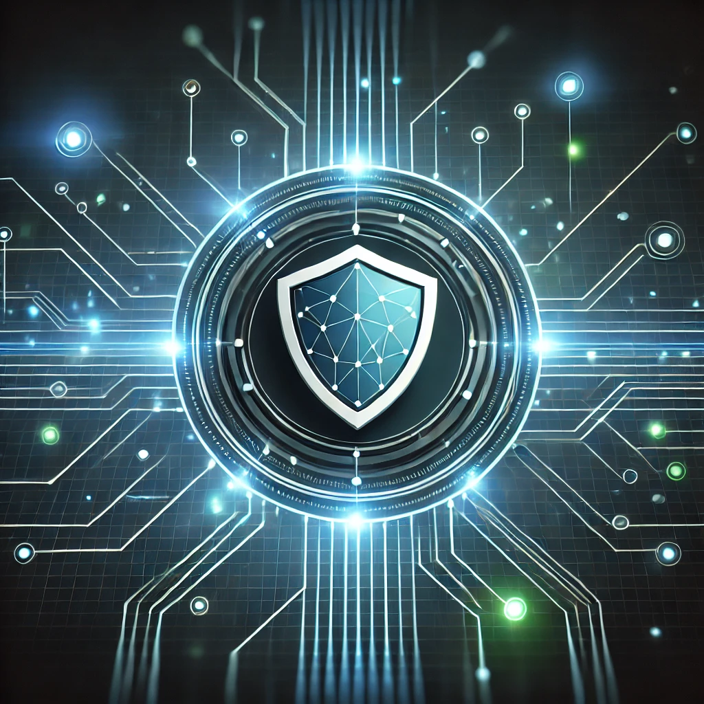
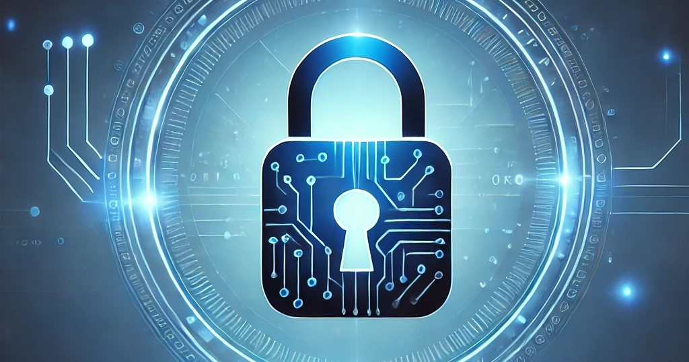

<div class="article-container">
  <article>
    <header>
      <figure>
        
      </figure>
      <h1 class="article-title">Concurso de Seguridad Informática 2025</h1>
      <h2 class="article-subtitle">La oportunidad para mostrar tus habilidades en ciberseguridad</h2>
      <p class="author">By Paloma Balmori</p>
    </header>
    <section>
      <p>
        El objetivo principal es crear conciencia sobre la importancia 
        de proteger nuestros datos en un mundo digital cada vez más interconectado.
      </p>
      <p>
        Los participantes competirán en una serie de desafíos prácticos diseñados para poner a prueba sus habilidades en 
        diversas áreas de la ciberseguridad. Entre los retos más destacados se incluyen el análisis y desmantelamiento de malware, 
        pruebas de penetración en sistemas y redes, resolución de problemas complejos de criptografía, y simulaciones de incidentes
        de ciberseguridad en tiempo real. Cada desafío está diseñado no solo para evaluar el conocimiento técnico, sino también para 
        medir la capacidad de los participantes para trabajar bajo presión, tomar decisiones rápidas y aplicar soluciones efectivas ante 
        situaciones de alto riesgo.
      </p>
    </section>
    <section>
      <h2>Requisitos para Participar en el Concurso</h2>
      <ul>
        <li><strong>Edad mínima:</strong> 18 años (o permiso parental en caso de ser menor de edad).</li>
        <li><strong>Conocimientos previos:</strong> Se recomienda tener experiencia básica o avanzada en ciberseguridad, análisis de malware, pruebas de penetración y criptografía.</li>
        <li><strong>Equipo:</strong> Los participantes deben contar con un ordenador personal portátil o de escritorio con conexión a internet.</li>
        <li><strong>Software:</strong> Se deberá tener instalado software específico para el análisis de vulnerabilidades y pruebas de penetración, que será proporcionado antes del evento.</li>
        <li><strong>Inscripción previa:</strong> La inscripción al evento debe completarse antes de la fecha límite, proporcionando los datos personales y de contacto.</li>
        <li><strong>Trabajo en equipo:</strong> El concurso permite la participación individual o en equipos de hasta 3 personas. Los equipos deben tener un nombre registrado durante la inscripción.</li>
        <li><strong>Cumplir con las normas del evento:</strong> Todos los participantes deben respetar el código de conducta y las reglas del concurso, que incluyen el comportamiento ético durante las actividades de pruebas de penetración.</li>
        <li><strong>Certificado de participación:</strong> Al finalizar el concurso, todos los participantes recibirán un certificado digital de participación, que puede ser utilizado para fines educativos o profesionales.</li>
      </ul>
      <figure>
        
        <figcaption>Logo ganador del concurso de la edición anterior.</figcaption>
      </figure>      
    </section>
    <section>
      <h2>Charlas y Actividades del Evento</h2>
      <p>
        Este evento también contará con charlas impartidas por reconocidos especialistas del sector. Además, habrá actividades prácticas y una feria tecnológica donde empresas líderes en ciberseguridad presentarán sus últimos avances. Los asistentes podrán interactuar directamente con los expertos, hacer preguntas y profundizar en temas de vanguardia que están moldeando el futuro de la ciberseguridad.
      </p>
      <p>
        Las actividades prácticas estarán diseñadas para ofrecer una experiencia de aprendizaje inmersiva, donde los participantes podrán aplicar los conocimientos adquiridos en situaciones del mundo real. Desde workshops interactivos hasta sesiones de resolución de incidentes de seguridad en tiempo real, los asistentes podrán mejorar sus habilidades técnicas y aprender las mejores prácticas utilizadas por los profesionales del sector. Esta combinación de teoría y práctica garantiza que cada participante pueda llevarse una valiosa experiencia aplicable a su desarrollo profesional.
      </p>
      <blockquote>
        “La seguridad informática no es solo un reto técnico, sino una responsabilidad ética en el mundo digital actual.”
        <span>– Dr. Laura Sánchez, Experta en Ciberseguridad</span>
      </blockquote>
      <figure>
        
        <figcaption>Participantes resolviendo desafíos en una edicón anterior del concurso.</figcaption>
      </figure>
    </section>
    <footer>
      <p>
        ¡No te pierdas esta experiencia única! Inscríbete antes del 15 de diciembre y demuestra tu talento en 
        el campo de la ciberseguridad. Habrá premios para los tres primeros lugares y oportunidades para conectar 
        con empresas líderes del sector.
      </p>
      <ul>
        <li>Fecha: 10 y 11 de enero de 2025</li>
        <li>Ubicación: Sala de conferencias de la Universitat Oberta de Catalunya</li>
        <li>Inscripciones abiertas hasta el 15 de diciembre</li>
      </ul>
    </footer>
  </article>  
</div>